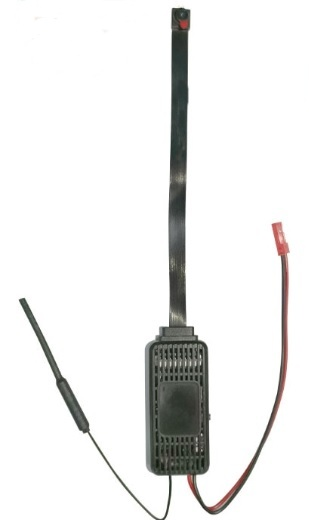

Remarque :
Certains dispositifs peuvent transmettre et enregistrer simultanément.
(Exemple : micro-espion audio/vidéo avec carte SD — fig. 03)

Certains dispositifs peuvent transmettre et enregistrer simultanément.
(Exemple : micro-espion audio/vidéo avec carte SD — fig. 03)

Suite aux nombreux faits divers récents liés à l’espionnage, cette liste reste non exhaustive.
L’Opération de Sécurité Électronique (OSE) a notamment pour objectif de rechercher et de détecter les équipements d’écoute clandestine. Compte tenu de la diversité des dispositifs disponibles à la vente en ligne, souvent à des prix très abordables, n’importe qui peut en installer un.
Il existe un vaste choix de matériel d’espionnage. Fort heureusement, ces dispositifs peuvent parfois être détectés si l’on possède une expérience suffisante et des appareils de mesure adaptés.
En effet, ces équipements d’écoute sont souvent hybrides (par exemple : cachés dans un réveil, une boîte quelconque, un détecteur d’intrusion, etc.) et orientés vers le centre d’intérêt. Ils peuvent être relativement faciles à repérer dans certains cas…